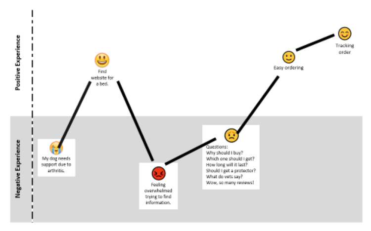
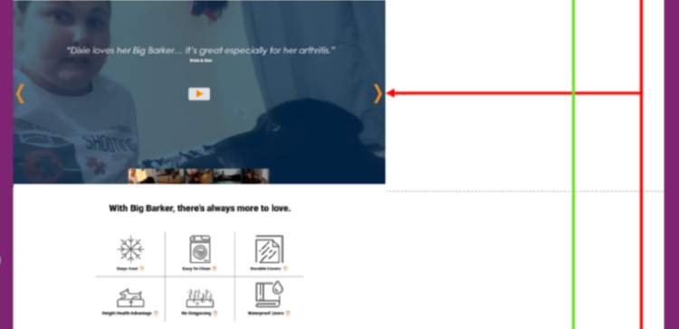

Explore
- Research Methods
- Build personas
- Write user stories
- As a large dog owner, I want to easily purchase a supportive dog bed on the internet, so I will not have to go to the store.
- Design review- below shows the entire landing page:


- Journey map 


- 


- Prototype feedback and testing
- Activities
- Design review
- User research to build user personas and stories
- Discuss user journey with stakeholders
- Iterate designs by testing paper prototypes with users in realtime.
I conducted a short survey targeted toward key demographic of dog owners to find current pain points they face in caring for their dog. I supplemented the findings with additional research available online, and found that across the board dog owners viewed their pets as an additional member of their family and prioritize trust, safety, and quality as key elements when selecting products. I used the findings to develop two personas of potential users and worked to address unique challenges each of them face. Following persona development I created a potential user journey that sought to identify points of focus when moving into app development. These would be opportunities to create a unique experience for the user and resolve areas of frustration.

IN PROGRESS